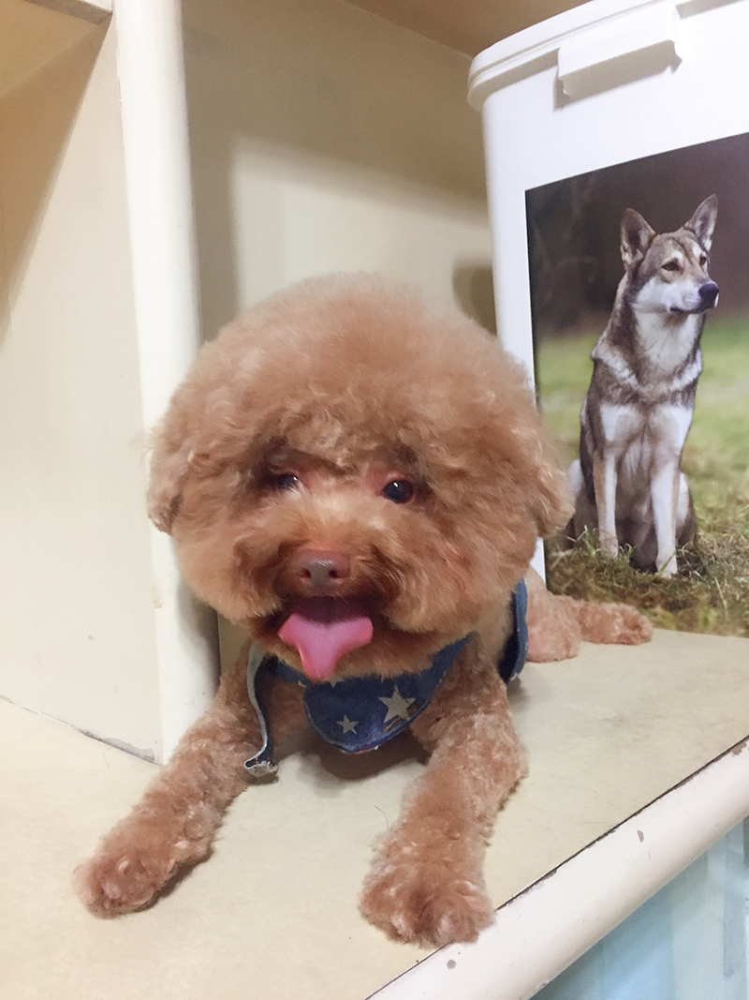
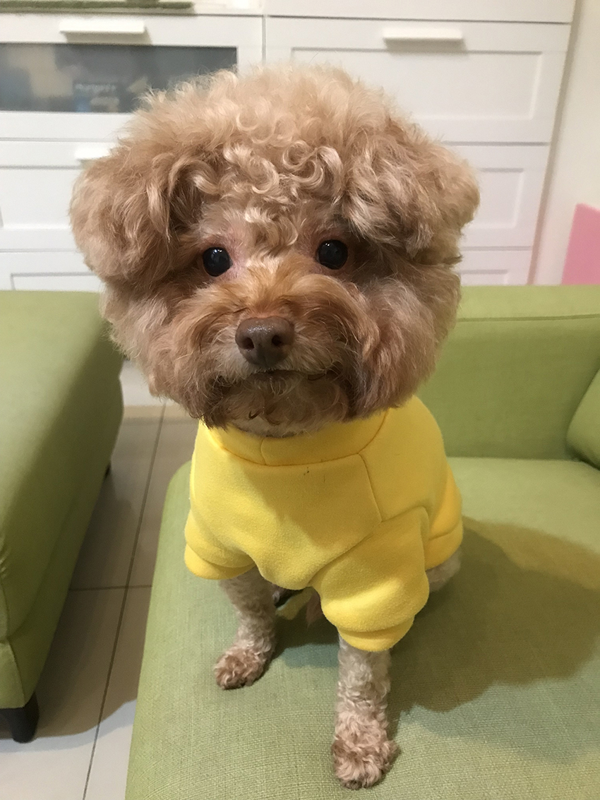
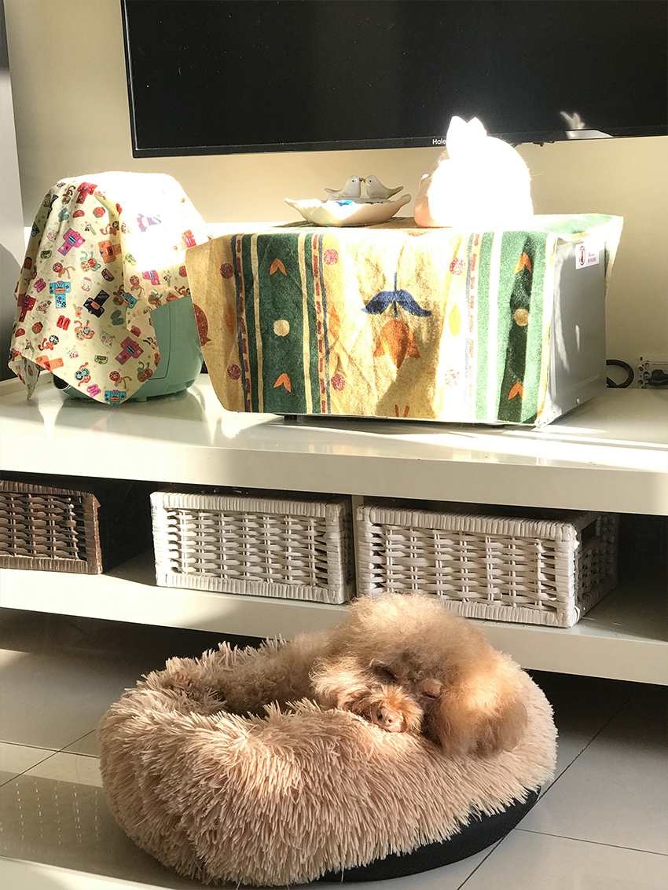

我的爆炸頭捲捲
連柏柔│企業產品硬體工程一處
捲捲原先是妹妹養的狗，因為她生小孩之後無暇照顧，問我願不願意接手一隻紅貴賓，我也不假思索就答應了，回家後捲捲已經在家裡等我。
|  |
牠剛來的時候，會追著家裡的金吉拉阿二跑，嚇得阿二總是躲起來，後來我買了圍欄將牠們兩隻隔離，貓狗各自擁有自己的空間，沒想到幾天後，阿二突然不怕捲捲了，還會自己跳出圍欄到捲捲的空間走走逛逛。
圍欄拆掉後，貓狗相安無事過了好幾年，阿二偶爾還會對捲捲哈氣，甚至用貓拳揮捲捲。人家說紅貴賓很聰明，飼養之後才發現傳聞不假，一旦牠不小心做錯事被指責，頭就會低低的、眼睛撇開我們的視線，深怕自己被處罰。
|  |
好吃的捲捲，特別愛吃水煮蛋和水果，漸漸越來越胖，因此獲得小名「阿胖」。阿胖雖胖，但體力良好，每次洗完澡都會開心地在家裡暴衝，而假日外出時，也願意跟著我們走一整天的路。
膽小如牠，最害怕打雷聲，每當打雷時，捲捲就會跑到我們的身邊，萬一我們都不在，牠就會躲在屋子裡離雷聲最遠的角落，而牠唯一缺點就是對門鈴聲、腳步聲敏感，鄰居開門太大聲時，捲捲就會汪汪叫，好像在告訴我們「壞人來了啊！」
如今捲捲已經11歲了，關節開始老化，雖然無法跟以前一樣盡情跑跳，只要牠平安健康就好！
|  |